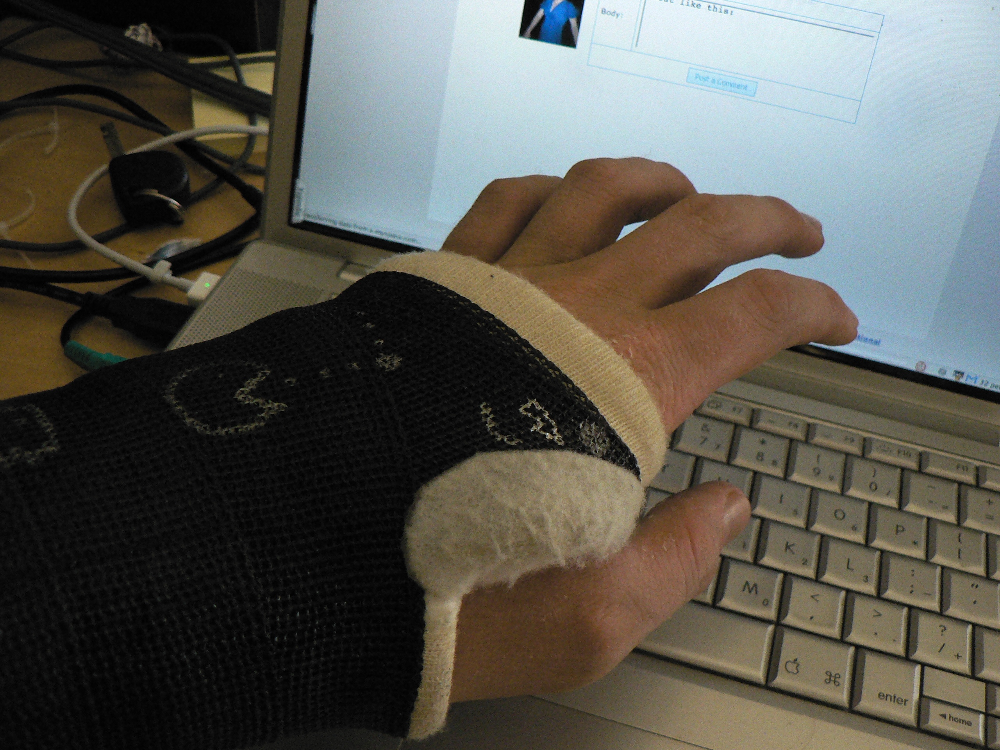
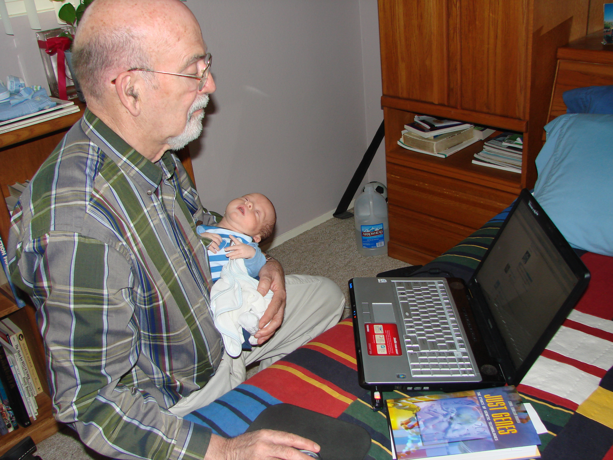
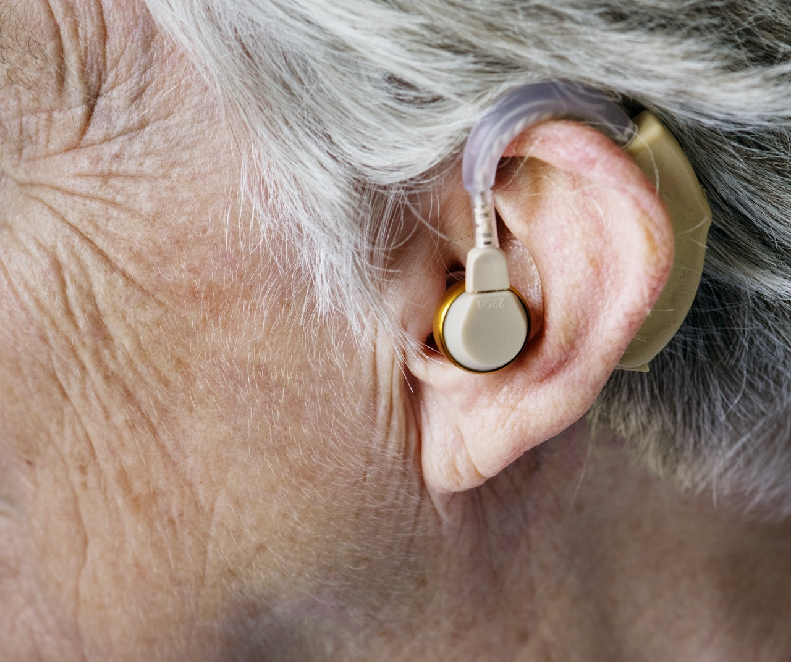
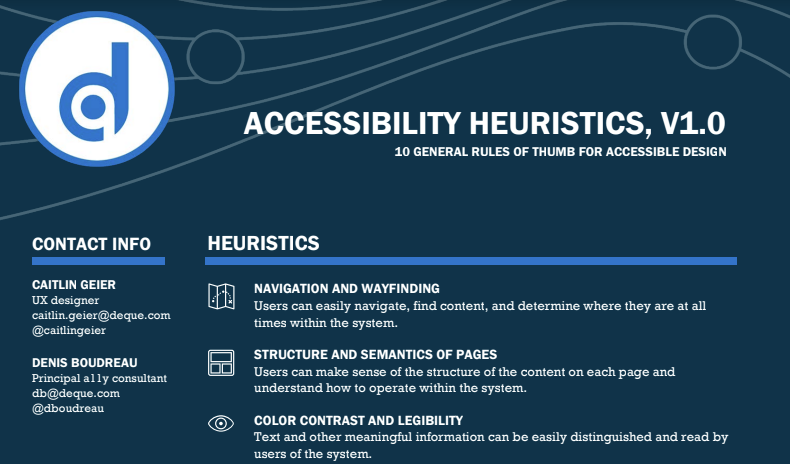

Broken Wrist/Carpal Tunnel
No Mouse

A Baby
Screen in Sunlight

Shhhhh!
Don't do this!

Tech Support

That's You!
15% Disabled

Accessible Web Communications
The power of the web is in its universality. Access by everyone regardless of disability is an essential aspect.
Accessibility Heuristics
tinyurl.com/vt-handout
Training and Tutorials
tinyurl.com/vt-learn
Professional Development
tinyurl.com/vt-pdn
Digital Accessibility Brown Bag

tinyurl.com/vt-brown-bag
Professional Certification Grants
assist.vt.edu/certgrant
Resources
- Rob Fentress
learn@vt.edu - Accessible Technologies
assist.vt.edu